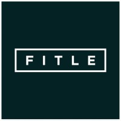
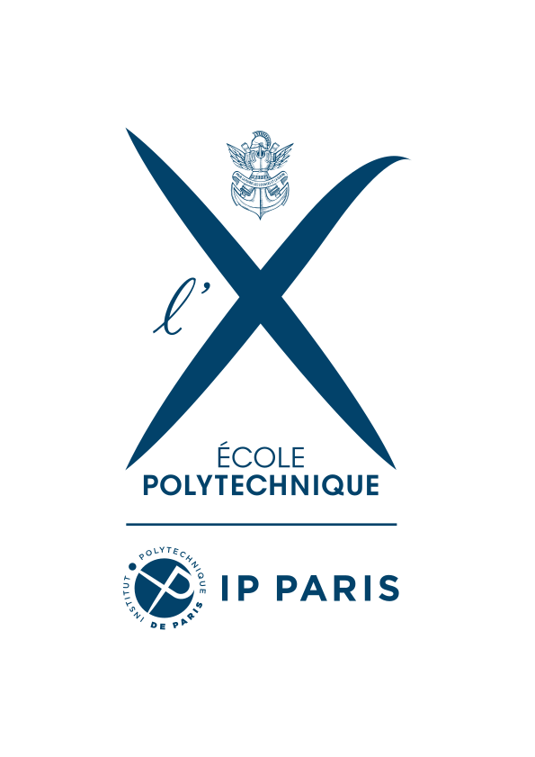

Kinetix
Chief Science and Product Officer May 2025 - Present
Frontier research and product development for human motion and camera controlled video generation.
At the intersection of generative image, 3D and video AI, with a focus on human motion intelligence. Demonstrated ability to lead research projects and effectively translate them to cutting-edge products.
Experience
Kinetix
Frontier research and product development for human motion and camera controlled video generation.

Meta
Human centric AI research on the Codec Avatar team.
Mindmesh (YC S21)
Built product and engineering foundations as founding CTO of MindMesh, a YC-backed company that raised $2.8M.

Fitle
Led R&D for bleeding-edge avatar reconstruction from photos and physical clothing simulation, applied to online virtual try-on.
Dataiku
Developed capabilities for large-scale training and universal inference of machine-learning models.
Nextperf (now Rakuten Marketing)
Led machine-learning development for algorithmic advertising and prediction systems, leading to a 15 point increase in gross margin and 10 point increase in revenue.
Education

Tel Aviv University
Doctoral research in computer vision, 3D, human motion intelligence, and generative AI.
University of Cambridge
Advanced study in mathematics and theoretical physics, awarded with Merit.

Ecole Polytechnique
Scientific and engineering training with a foundation in mathematics, statistics, and machine learning.